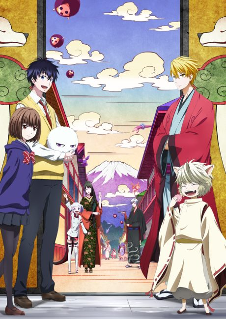

Anime
Manga
2016 · Supernatural
The Morose Mononokean
不機嫌なモノノケ庵
AniList7.2
Animeter—
2 seasons26 ep
MangaUnclear
2 seasons, 26 episodes
In airing order. Episode numbers on this site count straight through every season, so season 2 starts at episode 14.
1
2016 · TV
The Morose Mononokean
Episodes1–1313 ep
2
2019 · TV
The Morose Mononokean Ⅱ
Episodes14–2613 ep
Sources: AniList